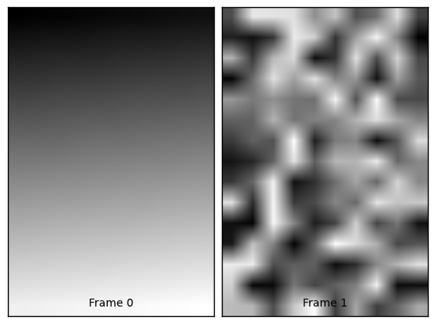

Module: io¶
Inheritance diagram for skimage.io:
Utilities to read and write images in various formats.
The following plug-ins are available:
ImageCollection¶
- class skimage.io.ImageCollection(load_pattern, conserve_memory=True, load_func=None)¶
Bases: object
Load and manage a collection of image files.
Note that files are always stored in alphabetical order.
Parameters : load_pattern : str or list
Pattern glob or filenames to load. The path can be absolute or relative. Multiple patterns should be separated by a colon, e.g. ‘/tmp/work/.png:/tmp/other/.jpg’. Also see implementation notes below.
conserve_memory : bool, optional
If True, never keep more than one in memory at a specific time. Otherwise, images will be cached once they are loaded.
Notes
ImageCollection can be modified to load images from an arbitrary source by specifying a combination of load_pattern and load_func. For an ImageCollection ic, ic[5] uses load_func(file_pattern[5]) to load the image.
Imagine, for example, an ImageCollection that loads every tenth frame from a video file:
class AVILoader: video_file = 'myvideo.avi' def __call__(self, frame): return video_read(self.video_file, frame) avi_load = AVILoader() frames = range(0, 1000, 10) # 0, 10, 20, ... ic = ImageCollection(frames, load_func=avi_load) x = ic[5] # calls avi_load(frames[5]) or equivalently avi_load(50)
Another use of load_func would be to convert all images to uint8:
def imread_convert(f): return imread(f).astype(np.uint8) ic = ImageCollection('/tmp/*.png', load_func=imread_convert)
Examples
>>> import skimage.io as io >>> from skimage import data_dir
>>> coll = io.ImageCollection(data_dir + '/lena*.png') >>> len(coll) 2 >>> coll[0].shape (128, 128, 3)
>>> ic = io.ImageCollection('/tmp/work/*.png:/tmp/other/*.jpg')
Attributes
files Methods
reload - __init__(load_pattern, conserve_memory=True, load_func=None)¶
Load and manage a collection of images.
- conserve_memory¶
- files¶
- reload(n=None)¶
Clear the image cache.
Parameters : n : None or int
Clear the cache for this image only. By default, the entire cache is erased.
MultiImage¶
- class skimage.io.MultiImage(filename, conserve_memory=True, dtype=None)¶
Bases: object
A class containing a single multi-frame image.
Parameters : filename : str
The complete path to the image file.
conserve_memory : bool, optional
Whether to conserve memory by only caching a single frame. Default is True.
Notes
If conserve_memory=True the memory footprint can be reduced, however the performance can be affected because frames have to be read from file more often.
The last accessed frame is cached, all other frames will have to be read from file.
The current implementation makes use of PIL.
Examples
>>> from skimage import data_dir
>>> img = MultiImage(data_dir + '/multipage.tif') >>> len(img) 2 >>> for frame in img: ... print frame.shape (15, 10) (15, 10)
The two frames in this image can be shown with matplotlib:
import os import matplotlib.pyplot as plt from mpl_toolkits.axes_grid import AxesGrid from skimage.io import MultiImage from skimage import data_dir # Load the multi-layer image fname = os.path.join(data_dir, 'multipage.tif') img = MultiImage(fname) # Create an image grid fig = plt.figure() grid = AxesGrid(fig, rect=(1, 1, 1), nrows_ncols=(1, 2), axes_pad=0.1) # Plot the layers on the image grid for i, frame in enumerate(img): grid[i].imshow(frame, cmap=plt.cm.gray) grid[i].set_xlabel('Frame %s' % i) grid[i].set_xticks([]) grid[i].set_yticks([]) plt.show()
(Source code, png)
- __init__(filename, conserve_memory=True, dtype=None)¶
Load a multi-img.
- conserve_memory¶
- filename¶
{kind=link}
Video¶
- class skimage.io.Video(source=None, size=None, sync=False, backend=None)¶
Bases: object
Video loader. Supports Opencv and Gstreamer backends.
Parameters : source : str
Media location URI. Video file path or http address of IP camera.
size: tuple, optional :
Size of returned array.
sync: bool, optional (default False) :
Frames are extracted per frame or per time basis. Gstreamer only. If enabled the video time step continues onward according to the play rate. Useful for IP cameras and other real time video feeds.
backend: str, ‘gstreamer’ or ‘opencv’ :
Backend to use.
Methods
duration frame_count get get_collection get_index_frame seek_frame seek_time - __init__(source=None, size=None, sync=False, backend=None)¶
- duration()¶
Returns time length of video in milliseconds.
Returns : output : int
Time length [ms].
- frame_count()¶
Returns frame count of video.
Returns : output : int
Frame count.
- get()¶
Retrieve the next video frame as a numpy array.
Returns : output : array (image)
Retrieved image.
- get_collection(time_range=None)¶
Returns an ImageCollection object.
Parameters : time_range: range (int), optional :
Time steps to extract, defaults to the entire length of video.
Returns : output: ImageCollection :
Collection of images iterator.
- get_index_frame(frame_number)¶
Retrieve a specified video frame as a numpy array.
Parameters : frame_number : int
Frame position
Returns : output : array (image)
Retrieved image.
- seek_frame(frame_number)¶
Seek to specified frame in video.
Parameters : frame_number : int
Frame position
- seek_time(milliseconds)¶
Seek to specified time in video.
Parameters : milliseconds : int
Time position
| skimage.io.imread(fname, **plugin_args[, ...]) | Load an image from file. |
| skimage.io.imread_collection(load_pattern, ...) | Load a collection of images. |
| skimage.io.imsave(fname, arr, **plugin_args) | Save an image to file. |
| skimage.io.imshow(arr, **plugin_args[, plugin]) | Display an image. |
| skimage.io.load_sift(f) | Read SIFT or SURF features from a file. |
| skimage.io.load_surf(f) | Read SIFT or SURF features from a file. |
| skimage.io.plugin_info(plugin) | Return plugin meta-data. |
| skimage.io.plugin_order() | Return the currently preferred plugin order. |
| skimage.io.plugins([loaded]) | List available plugins. |
| skimage.io.pop() | Pop an image from the shared image stack. |
| skimage.io.push(img) | Push an image onto the shared image stack. |
| skimage.io.show() | Display pending images. |
| skimage.io.use_plugin(name[, kind]) | Set the default plugin for a specified operation. |
imread¶
- skimage.io.imread(fname, as_grey=False, plugin=None, flatten=None, **plugin_args)¶
Load an image from file.
Parameters : fname : string
Image file name, e.g. test.jpg.
as_grey : bool
If True, convert color images to grey-scale (32-bit floats). Images that are already in grey-scale format are not converted.
plugin : str
Name of plugin to use (Python Imaging Library by default).
Returns : img_array : ndarray
The different colour bands/channels are stored in the third dimension, such that a grey-image is MxN, an RGB-image MxNx3 and an RGBA-image MxNx4.
imread_collection¶
- skimage.io.imread_collection(load_pattern, conserve_memory=True, plugin=None, **plugin_args)¶
Load a collection of images.
Parameters : load_pattern : str or list
List of objects to load. These are usually filenames, but may vary depending on the currently active plugin. See the docstring for ImageCollection for the default behaviour of this parameter.
conserve_memory : bool, optional
If True, never keep more than one in memory at a specific time. Otherwise, images will be cached once they are loaded.
Returns : ic : ImageCollection
Collection of images.
imsave¶
- skimage.io.imsave(fname, arr, plugin=None, **plugin_args)¶
Save an image to file.
Parameters : fname : str
Target filename.
arr : ndarray of shape (M,N) or (M,N,3) or (M,N,4)
Image data.
plugin : str
Name of plugin to use. By default, the different plugins are tried (starting with the Python Imaging Library) until a suitable candidate is found.
imshow¶
- skimage.io.imshow(arr, plugin=None, **plugin_args)¶
Display an image.
Parameters : arr : ndarray
Image data.
plugin : str
Name of plugin to use. By default, the different plugins are tried (starting with the Python Imaging Library) until a suitable candidate is found.
load_sift¶
- skimage.io.load_sift(f)¶
Read SIFT or SURF features from a file.
Parameters : f : string or open file
Input file generated by the feature detectors from http://people.cs.ubc.ca/~lowe/keypoints/ or http://www.vision.ee.ethz.ch/~surf/
Returns : data : record array with fields
- row: int
row position of feature
- column: int
column position of feature
- scale: float
feature scale
- orientation: float
feature orientation
- data: array
feature values
load_surf¶
- skimage.io.load_surf(f)¶
Read SIFT or SURF features from a file.
Parameters : f : string or open file
Input file generated by the feature detectors from http://people.cs.ubc.ca/~lowe/keypoints/ or http://www.vision.ee.ethz.ch/~surf/
Returns : data : record array with fields
- row: int
row position of feature
- column: int
column position of feature
- scale: float
feature scale
- orientation: float
feature orientation
- data: array
feature values
plugin_info¶
- skimage.io.plugin_info(plugin)¶
Return plugin meta-data.
Parameters : plugin : str
Name of plugin.
Returns : m : dict
Meta data as specified in plugin .ini.
plugin_order¶
- skimage.io.plugin_order()¶
Return the currently preferred plugin order.
Returns : p : dict
Dictionary of preferred plugin order, with function name as key and plugins (in order of preference) as value.
plugins¶
- skimage.io.plugins(loaded=False)¶
List available plugins.
Parameters : loaded : bool
If True, show only those plugins currently loaded. By default, all plugins are shown.
Returns : p : dict
Dictionary with plugin names as keys and exposed functions as values.
pop¶
- skimage.io.pop()¶
Pop an image from the shared image stack.
Returns : img : ndarray
Image popped from the stack.
push¶
- skimage.io.push(img)¶
Push an image onto the shared image stack.
Parameters : img : ndarray
Image to push.
show¶
- skimage.io.show()¶
Display pending images.
Launch the event loop of the current gui plugin, and display all pending images, queued via imshow. This is required when using imshow from non-interactive scripts.
A call to show will block execution of code until all windows have been closed.
Examples
>>> import skimage.io as io
>>> for i in range(4): ... io.imshow(np.random.random((50, 50))) >>> io.show()
use_plugin¶
- skimage.io.use_plugin(name, kind=None)¶
Set the default plugin for a specified operation. The plugin will be loaded if it hasn’t been already.
Parameters : name : str
Name of plugin.
kind : {‘imsave’, ‘imread’, ‘imshow’, ‘imread_collection’}, optional
Set the plugin for this function. By default, the plugin is set for all functions.
See also
- plugins
- List of available plugins
Examples
Use the Python Imaging Library to read images:
>>> from skimage.io import use_plugin >>> use_plugin('pil', 'imread')